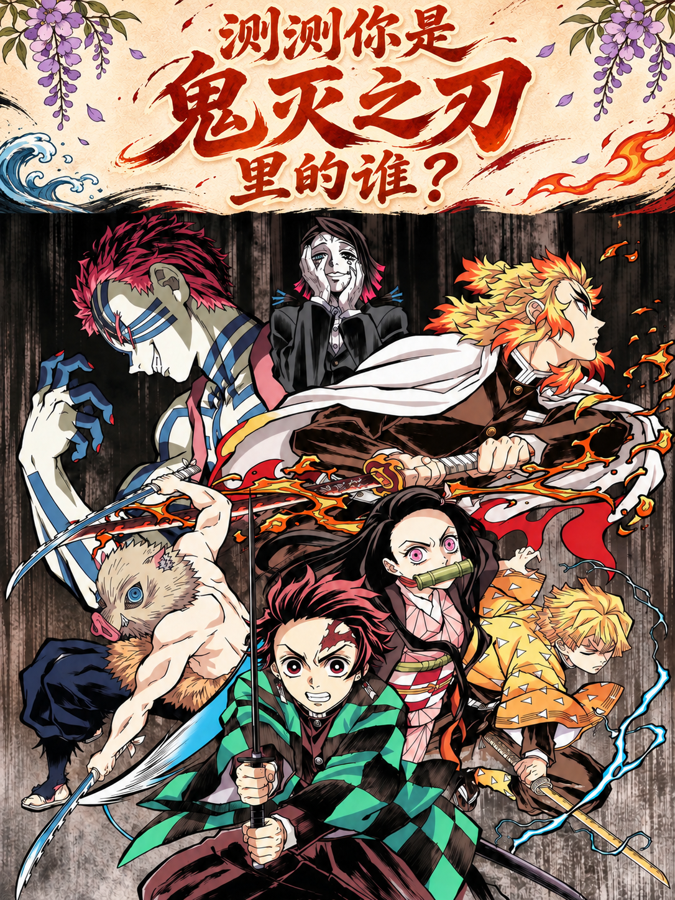

TAISHO · BREATH
大正夜色 · 粉丝向测试

BREATHING STYLE · CHARACTER QUIZ
DEMON SLAYER · PERSONALITY QUIZ
测测你是《鬼灭之刃》里的谁？
15道取材于鬼杀队训练、鎹鸦任务与伙伴协作的情境题，从六个性格侧面，看看你更像哪位剑士。
“心里的火种不会熄灭，呼吸之间，自有前行的方向。”一份原创测试寄语，不是作品原台词。
⏱ 约 2 分钟🗡 15 道情境题🌸 六维雷达解析
凭第一直觉作答，没有标准答案。